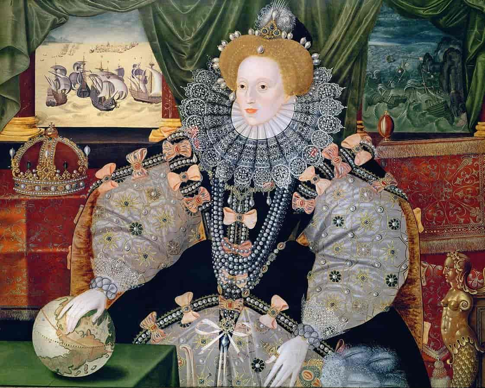

Children
Anne Boleyn and Henry only had one surviving child, Elizabeth. Although Henry wanted a son as an heir, Elizabeth became the longest ruling Tudor monarch. She did not have any children, and the throne went to the Stuarts.
Anne Boleyn and Henry only had one surviving child, Elizabeth. Although Henry wanted a son as an heir, Elizabeth became the longest ruling Tudor monarch. She did not have any children, and the throne went to the Stuarts.